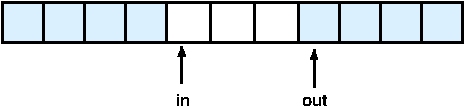
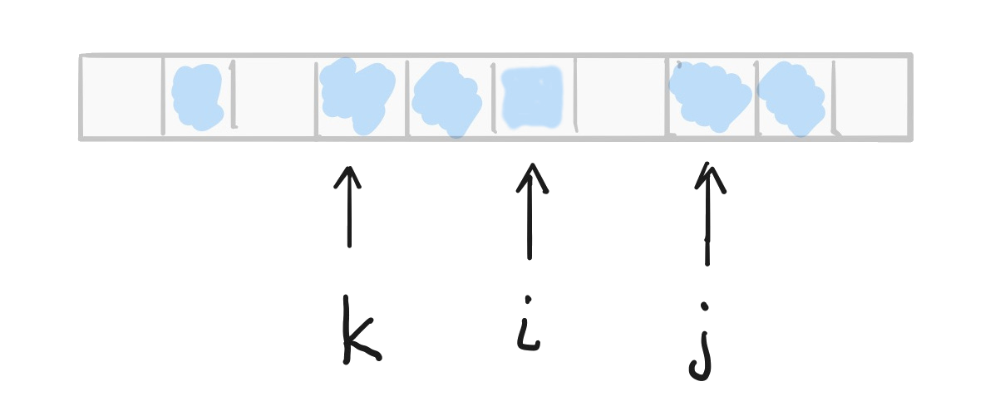

class: center, middle, title-slide ## CSCI 340 Operating Systems <br> ## Chapter 6: Process Synchronization .author[ Stewart Weiss<br> ] .license[ Copyright 2020 Stewart Weiss. Unless noted otherwise all content is released under a [Creative Commons Attribution-ShareAlike 4.0 International License](https://creativecommons.org/licenses/by-sa/4.0/). ] --- name: cc-notice template: default layout: true .bottom-left[ © Stewart Weiss. CC-BY-SA. ] --- name: tinted-slide template: cc-notice layout: true class: tinted --- name:toc ### Table of Contents [Prequisite Reading](#prereqs)<br> [Terminology](#terminology)<br> [Topics Covered](#topics)<br> [Basic Problem](#the-problem)<br> [Synchronization Mechanisms](#synchronization)<br> [Why is this an Operating System Topic?](#reason-we-study-synch)<br> [Example of a Race Condition](#race-cond-example)<br> [Producer and Consumer Code](#prod-cons-code)<br> [The Race Condition](#race-in-prod-cons)<br> [Race Conditions in the Kernal](#kernel-races)<br> [Preventing Race Conditions in the Kernel](#preventing-races)<br> [Preemptive Kernels](#preemptive-kernels)<br> [Re-entrant Kernels](#reentrant-kernels)<br> [Preventing Race Conditions: The Critical Section Problem](#cs-problem)<br> [General Form of a Process](#process-form)<br> [The Conditions A Solution Must Satisfy](#cs-conditions)<br> [Allowed Assumptions](#assumptions)<br> [Algorithm 1](#algorithm-1)<br> [Algorithm 1](#algorithm-1-2)<br> [Satisfies Mutual Exclusion?](#alg1-mutex)<br> [Satisfies Progress?](#alg1-progress)<br> --- ### Table of Contents [Algorithm 2](#algorithm-2)<br> [Satisfies Mutual Exclusion?](#alg2-mutex)<br> [Satisfies Progress?](#alg2-progress)<br> [Peterson's Two-Process Software Solution](#peterson-solution)<br> [Peterson's Algorithm](#peterson-alg)<br> [Satisfies Mutual Exclusion?](#peterson-mutex)<br> [Satisfies Progress?](#peterson-progress)<br> [Satisfies Bounded Waiting?](#peterson-bound-wait)<br> [Limitations of Peterson's Algorithm](#peterson-limits)<br> [Effects of Instruction Re-ordering](#instruct-reorder)<br> [Effects of Instruction Re-ordering (2)](#instruct-reorder-effects)<br> [Peterson's Algorithm Re-ordered](#peterson-reordered)<br> [Memory Barriers](#memory-barriers)<br> [Memory Models](#memory-models)<br> [Example](#mem-barrier-example)<br> [Peterson's Revisited](#peterson-revisited)<br> [Hardware Support for Critical Section Solutions](#hardware-support)<br> [Bus locking](#bus-locking)<br> [Hardware Primitives](#hardware-primitives)<br> [The Test-and-Set Instruction](#test-and-set)<br> [Implementing Test-and-Set](#test-and-set-implementation)<br> [Using Test-and-Set for Critical Sections](#testset-cs)<br> [Compare-and-Swap Instruction](#cas)<br> --- ### Table of Contents [Implementing Test-and-Set With Compare-and-Swap](#cas-as-tas)<br> [Using Compare-and-Swap for Critical Sections](#cas-cs)<br> [Ensuring Bounded Waiting Using Locks](#cs-bounded-waiting)<br> [Why This Works](#cs-bounded-wait2)<br> [Why This Works](#cs-bounded-wait2-2)<br> [Why This Works](#cs-bounded-wait2-3)<br> [Why This Works](#cs-bounded-wait2-4)<br> [Why This Works](#cs-bounded-wait2-5)<br> [Why This Works](#cs-bounded-wait2-6)<br> [Why This Works](#cs-bounded-wait2-7)<br> [Why This Works](#cs-bounded-wait2-8)<br> [Why This Works](#cs-bounded-wait2-8)<br> [Why This Works](#cs-bounded-wait2-9)<br> [Atomic Variables](#atomic-vars)<br> [Implementing Atomic Variables](#atomic-vars-2)<br> [Implementing Atomic Incrrement](#atomic-inc)<br> [Mutex Locks](#mutex-locks)<br> [Mutex Lock Semantics](#mutex-lock-semantics)<br> [Using Mutex Locks for Critical Sections](#using-mutex-lock)<br> [Semaphore Origins](#sem-origins)<br> [Semaphore Definition](#sem-def)<br> [Observations](#sem-observations-1)<br> [Observations](#sem-observations-2)<br> --- ### Table of Contents [Binary Semaphores for Mutual Exclusion](#sem-cs)<br> [Bounded Waiting and Semaphores](#sem-cs-bounded-waiting)<br> [Counting Semaphores](#counting-sems)<br> [Example](#counting-sem-example)<br> [Semaphores for Serializing](#sem-synching)<br> [Implementing Semaphores: Considerations](#sem-implementation)<br> [Semaphore Implementation](#sem-implementation-2)<br> [Implementing `wait()`](#wait-implementation)<br> [Implementing `signal()`](#signal-implementation)<br> [Liveness](#liveness)<br> [Deadlock](#liveness-deadlock)<br> [Priority Inversion](#liveness-priority-inversion)<br> [Priority Inheritance Protocol](#priority-inheritance)<br> [References](#references)<br> <!--TOC_END--> --- name: prereqs ### Requisite Reading Before reading these slides, you should be familiar with .lightbluebox[ - Computer organization - Operating system structure - Processes and concurrency ] --- name: terminology ### Terminology In this slide set, we use the terms "process" and "thread" interchangeably. The reader should be aware that unrelated processes generally are not able to access shared variables, whereas threads generally can. In the slides, when we refer to processes that access shared variables, the reader can think of these as either threads, or as processes that have set up shared memory through an appropriate kernel API. --- name: topics ### Topics Covered .lightbluebox[ - The Basic Problem - The Critical-Section Problem - Software Solution: Peterson’s Solution - Hardware Support for Synchronization - Mutex Locks - Semaphores - Liveness ] --- name: the-problem ### Basic Problem .big[What problem are we trying to solve?] - Processes can execute concurrently, either on same processor or on different ones. - Processes may be interrupted at any time, partially completing execution. - Processes might modify shared data. - Concurrent modification of shared data may result in .redbold[data inconsistency]: when two or more processes have different values of the same data object, such as a shared counter. - When the data inconsistency depends on the _order_ in which the processes modify the shared data, _and this is undesirable_, it is called a .redbold[race condition]. - Preventing race conditions requires .redbold[synchronization mechanisms] to ensure the controlled execution of cooperating processes. --- name: synchronization ### Synchronization Mechanisms People use the term “synchronization” to mean making two things happen at the same time. In computer science, .bluebold[synchronization] is the control of the order of events in time. .bluebold[Synchronization constraints] are requirements that are imposed on a set of events with respect to when they occur in time. - .bluebold[Mutual Exclusion]: Two events A and B .redbold[cannot] occur at the exact same time. - .bluebold[Serialization]: Event A must occur before event B. .bluebold[Synchronization mechanisms] are methods used to enforce synchronization, whether in hardware, software, or a combination of both. --- name: reason-we-study-synch ### Why is this an Operating System Topic? - Modern operating systems are composed of cooperating processes and/or threads. - These modify and access shared data such as tables that control memory allocation, file access, process creation, device management, and so on. - These accesses are potential race conditions that must be resolved. - Therefore to understand operating system design and function, it is imperative to understand the different means of process synchronization with respect to shared resources. --- name: race-cond-example ### Example of a Race Condition - The solution to the .redbold[producer-consumer problem] from Chapter 3 needed to keep one buffer empty to distinguish between empty and full conditions in the buffer pool: .center[ ``` in == out iff buffer is empty (in +1) % BUFFER_SIZE == out iff buffer is full ``` ] .center[  ] - Suppose that we want a solution that fills _all of the buffers_. -- - We can keep an integer `counter` that keeps track of the number of full buffers. Initially, `counter == 0`. - It is incremented by the producer after it fills a buffer and is decremented by the consumer after it consumes (empties) a buffer. --- name: prod-cons-code ### Producer and Consumer Code .centered_80[ Producer: ```C while (true) { /* produce an item in next produced */ while (counter == BUFFER_SIZE) ; /* do nothing */ buffer[in] = next_produced; in = (in + 1) % BUFFER_SIZE; `counter++;` } ``` ] .centered_80[ Consumer: ```C while (true) { while (counter == 0) ; /* do nothing */ next_consumed = buffer[out]; out = (out + 1) % BUFFER_SIZE; `counter--;` /* consume the item in next consumed */ } ``` ] --- name: race-in-prod-cons ### The Race Condition - This code has a .redbold[race condition] on the `counter` variable. In the two highlighted lines - `counter++` could be implemented with three machine instructions equivalent to ``` register1 = counter register1 = register1 + 1 counter = register1 ``` - `counter--` could be implemented with three machine instructions equivalent to ``` register2 = counter register2 = register2 - 1 counter = register2 ``` - Consider the execution sequence with `counter == 2` initially. `tk` denotes the kth time step: ``` t0: producer executes register1 = counter {register1 == 2 } t1: producer executes register1 = register1 + 1 {register1 == 3 } t2: consumer executes register2 = counter {register2 == 2 } t3: consumer executes register2 = register2 – 1 {register2 == 1 } t4: producer executes counter = register1 {counter == 3 } t5: consumer executes counter = register2 {counter == 1 } ``` - If t4 and t5 are swapped, then the final value of `counter` is 3, not 1. --- name: kernel-races ### Race Conditions in the Kernal - Race conditions can occur whenever shared variables are updated by two independent processes or threads. - A Linux kernel would have many race conditions if it did not use mechanisms to prevent them. For example, - In the implementation of the `fork()` system call, a new process id is assigned to the newly created process. - This requires incrementing the variable that stores the next available process id value. - If a computer has multiple cores, two processes might try to update that variable concurrently. On a single core, if the kernel is interrupted in the middle of the update, it is also possible that a second process could try to update it as well. - The value of the next available pid could be corrupted if these accesses were not synchronized. --- template: tinted-slide layout: true --- name: preventing-races ### Preventing Race Conditions in the Kernel - On a single-core processor, the kernel could use the following strategy: ``` disable all interrupts before executing any updates; perform the updates; re-enable interrupts ``` - This would guarantee that only one process at a time could modify shared data. - On multi-processors, this does not suffice, because the shared data can be modified by two different processes on separate cores. - Even on a single-processor machine with no hyper-threading, disabling interrupts is not an efficient solution for long sections of code, since important events might need to be handled during the time spent in the CS. --- name: preemptive-kernels ### Preemptive Kernels - A kernel is defined to be .redbold[preemptive] if it allows a process that is executing code in it to be preempted. In effect, more than one process can be executing kernel code, even the same code, concurrently. - A kernel that does not allow this is called a .redbold[non-preemptive kernel]. In a non-preemptive kernel, a kernel-mode process will run until it exits kernel mode, blocks, or voluntarily yields control of the CPU. - Non-preemptive kernels are simpler to design but have poorer response time than premptive kernels. --- name: reentrant-kernels ### Re-entrant Kernels - A kernel is defined to be .redbold[re-entrant] if more than one process can safely execute its code concurrently, meaning without causing data inconsistency. This means that more than one process executes in __kernel mode__ at a time. - Preemptive kernels must be re-entrant, otherwise data inconsistency results. - How can kernel code be made re-entrant? -- - If all kernel functions modify only local variables and do not alter global data structures, the code is re-entrant. Such functions are called .redbold[re-entrant functions]. - Alternatively, if the kernel functions modify shared data structures, then some other kind of mechanism is needed to ensure that race conditions do not occur. This is what we are about to study. --- name: cs-problem ### Preventing Race Conditions: The Critical Section Problem - Consider a system of n concurrent processes P.sub[0], P.sub[1], ...,P.sub[n-1]. - Each process has a .redbold[critical section] of code in which: - it may be modifying shared variables, updating tables, writing files, etc. - requiring that, when one process is in its critical section, no other can be in its critical section. - The .redbold[Critical Section Problem] is to design protocol that all processes can use to coordinate their accesses to this critical section of code. - A solution requires that each process must 1. ask permission to enter its critical section in an .redbold[entry section], 1. execute the .redbold[critical section] 1. execute an .redbold[exit section] in which it indicates that it exited its critical section, and 1. executes .redbold[non-critical section] code. --- name: process-form ### General Form of a Process - Since the goal is to find protocols to solve critical section problem, we represent a process as doing nothing but repeatedly entering and exiting a critical section, and doing "other stuff" when it is not in its critical section. - Therefore we represent a process as executing code of the following form: .centered_80[ ``` loop forever { ENTRY SECTION : indicate wish to enter the critical section Critical Section (CS) EXIT SECTION: indicate leaving the critical section Non-Critical Section (NCS) } ``` ] --- name: cs-conditions ### The Conditions A Solution Must Satisfy .section[ .bigger[Any solution to the problem must satisfy three criteria.] - .redbold[Mutual Exclusion]. If process Pi is executing in its critical section, then no other processes can be executing in their critical sections - .redbold[Progress]. If no process is executing in its critical section and there exist some processes that wish to enter their critical section, then the selection of the processes that will enter the critical section next cannot be postponed indefinitely - .redbold[Bounded Waiting]. A bound must exist on the number of times that other processes are allowed to enter their critical sections after a process has made a request to enter its critical section and before that request is granted ] --- name: assumptions ### Allowed Assumptions .section[ .bigger[ What can we assume?] - We can assume that each process executes at a nonzero speed. - We can assume that machine instructions to fetch, store, and test values are atomic, i.e., uninterruptible. - We can assume processes do not halt in their critical sections. - We __cannot assume__ that processes execute at any particuar relative speeds or that some processes have higher priorities than others. ] --- template: default layout: true --- name: software-solutions class: center, middle, inverse ## Software Solutions We examine solutions to the critical section problem that do not require any special hardware. --- template: tinted-slide layout: true --- name: algorithm-1 ### Algorithm 1 Assume that two processes, `P0` and `P1`, execute concurrently. They share a variable `turn` set to 0 initially: ```C turn = 0; ``` .left-column[.left[ ```C P0: while (true) { while (turn != 0) {} /* entry section*/ /* critical section (CS) */ turn = 1; /* exit section */ /* remainder section (NCS)*/ } ``` ]] .right-column[.left[ ```C P1: while (true) { while (turn != 1) {} /* entry section*/ /* critical section (CS)*/ turn = 0; /* exit section */ /* remainder section (NCS) */ } ``` ]] - Process P.sub[k] (`k=0,1`) entry section is .redbold[ `wait until turn == k`]. - Process P.sub[k] (`k=0,1`) exit section is .redbold[`turn = 1-k;` ]. (i.e., other process gets turn) - Implies P.sub[k] is in CS only if `turn == k`. - Once P.sub[k] leaves CS, it sets `turn` so other process can enter. - Processes therefore .greenbold[_take turns_] in CS. (This is called .redbold[ alternation. ]) --- name: algorithm-1-2 ### Algorithm 1 Assume that two processes, `P0` and `P1`, execute concurrently. They share a variable `turn` set to 0 initially: ```C turn = 0; ``` .left-column[.left[ ```C P0: while (true) { while (turn != 0) {} /* entry section*/ /* critical section (CS) */ turn = 1; /* exit section */ /* remainder section (NCS)*/ } ``` ]] .right-column[.left[ ```C P1: while (true) { while (turn != 1) {} /* entry section*/ /* critical section (CS)*/ turn = 0; /* exit section */ /* remainder section (NCS) */ } ``` ]] - Loops such as `while (turn != 1)` are called .bluebold[busy-waiting] loops. The process that executes them is very busy doing nothing other than testing the value of a variable, waiting for it to become a specific value. - They are not very efficient in terms of CPU cycles. Later we see alternative solutions. -- - Still, does this satisfy mutual exclusion, progress, and bounded waiting? --- name: alg1-mutex ### Satisfies Mutual Exclusion? .left-column[.left[ ```C P0: while (true) { while (turn != 0) {} /* entry section*/ /* critical section (CS) */ turn = 1; /* exit section */ /* remainder section (NCS)*/ } ``` ]] .right-column[.left[ ```C P1: while (true) { while (turn != 1) {} /* entry section*/ /* critical section (CS)*/ turn = 0; /* exit section */ /* remainder section (NCS) */ } ``` ]] - Yes. -- - The variable .redbold[ `turn`] is shared. It can store either a `1` or a `0` at any time, not both. - Since `P0` is in CS only if .redbold[ `turn == 0`] and `P1` is in CS only if .redbold[ `turn == 1`], they cannot be in the CS at the same time. --- name: alg1-progress ### Satisfies Progress? .left-column[.left[ ```C P0: while (true) { while (turn != 0) {} /* entry section*/ /* critical section (CS) */ turn = 1; /* exit section */ /* remainder section (NCS)*/ } ``` ]] .right-column[.left[ ```C P1: while (true) { while (turn != 1) {} /* entry section*/ /* critical section (CS)*/ turn = 0; /* exit section */ /* remainder section (NCS) */ } ``` ]] -- - Consider this sequence: .blue[ `P0` enters CS, sets `turn` to 1, enters NCS and stays there a long time. `P1` enters CS because `turn` is 1, sets `turn` to 0, enters its NCS, goes back to its entry section and waits for `turn` to become 1. But `turn` cannot become 1 until `P0` leaves its NCS, enters its CS again. ] - Progress is not satisfied because a process that wants to enters its CS (`P1`) is blocked from getting in even though no other process is in its entry or exit sections or its CS. --- name: algorithm-2 ### Algorithm 2 - Assume two processes, `P0` and `P1`, execute concurrently - __Initialization__. A global array of two bools, initially both `false`: ``` bool flag[2] = {false, false}; ``` - The variable .redbold[ `flag`] should be named .redbold[`ready_to_enter_CS`] for clarity. .left-column[.left[ ```C P0: while (true) { flag[0] = true; /* entry */ while ( flag[1] ) {} /* section */ /* critical section (CS) */ flag[0] = false; /* exit section */ /* remainder section (NCS)*/ } ``` ]] .right-column[.left[ ```C P1: while (true) { flag[1] = true; /* entry */ while ( flag[0] ) {} /* section */ /* critical section (CS) */ flag[1] = false; /* exit section */ /* remainder section (NCS)*/ } ``` ]] - When process P.sub[k] (`k=0,1`) sets `flag[k] = true`, it is saying, "I am ready to enter CS". - It then politely waits for other process with the following `while` loop - if other process is ready to enter its CS, it waits. --- name: alg2-mutex ### Satisfies Mutual Exclusion? .left-column[.left[ ```C P0: while (true) { flag[0] = true; /* entry */ while ( flag[1] ) {} /* section */ /* critical section (CS) */ flag[0] = false; /* exit section */ /* remainder section (NCS)*/ } ``` ]] .right-column[.left[ ```C P1: while (true) { flag[1] = true; /* entry */ while ( flag[0] ) {} /* section */ /* critical section (CS) */ flag[1] = false; /* exit section */ /* remainder section (NCS)*/ } ``` ]] - Yes. -- - A process enters its CS only if the other process is NOT ready to enter, e.g., process P0 enters CS only if `flag[1]` is `false`. Both processes set their `flag` to true before testing each other's `flag` so both cannot be `false` at the top of the loop on each iteration. --- name: alg2-progress ### Satisfies Progress? .left-column[.left[ ```C P0: while (true) { flag[0] = true; /* entry */ while ( flag[1] ) {} /* section */ /* critical section (CS) */ flag[0] = false; /* exit section */ /* remainder section (NCS)*/ } ``` ]] .right-column[.left[ ```C P1: while (true) { flag[1] = true; /* entry */ while ( flag[0] ) {} /* section */ /* critical section (CS) */ flag[1] = false; /* exit section */ /* remainder section (NCS)*/ } ``` ]] -- - Consider this scenario: - P0 sets `flag[0] = true` and P1 sets `flag[1] = true` at the same time. - Each now executes its respective while loop. - Because both are ready to enter CS, neither while loop is exited and both processes wait forever to enter the CS. -- - No progress is made. -- - This is called .redbold[deadlock]. --- name: peterson-solution ### Peterson's Two-Process Software Solution - Gary Peterson invented it in 1981<span class="super">1</span>. - This algorithm uses both variables, `flag[2]` and `turn` to solve the problem. - The use of both prevents alternation and prevents deadlock. - It assumes that the load and store machine-language instructions are atomic; that is, cannot be interrupted. - The variable turn indicates whose turn it is to enter the critical section. - The flag array is used to indicate if a process is ready to enter the critical section. `flag[k] = true` implies that process Pk is ready. .footnote[ [1] G. L. Peterson: "Myths About the Mutual Exclusion Problem", Information Processing Letters 12(3) 1981, 115–116 ] --- name: peterson-alg ### Peterson's Algorithm - A process gains entry to its CS if the other process is not ready to enter its CS (by setting its `flag` to false) __or__ if the other process has given privilege to the process by setting `turn` to that process's id, e.g., `turn = 0`. - __Initialization__. ```C bool flag[2] = {false, false}; int turn; ``` .left-column[.left[ ```C P0: while (true) { flag[0] = true; turn = 1; while (flag[1] == true && turn == 1) {} /* critical section (CS) */ flag[0] = false; /* remainder section (NCS)*/ } ``` ]] .right-column[.left[ ```C P1: while (true) { flag[1] = true; turn = 0; while (flag[0] == true && turn == 0) {} /* critical section (CS) */ flag[1] = false; /* remainder section (NCS)*/ } ``` ]] --- name: peterson-mutex ### Satisfies Mutual Exclusion? .left-column[.left[ ```C P0: while (true) { flag[0] = true; turn = 1; while (flag[1] == true && turn == 1) {} /* critical section (CS) */ flag[0] = false; /* remainder section (NCS)*/ } ``` ]] .right-column[.left[ ```C P1: while (true) { flag[1] = true; turn = 0; while (flag[0] == true && turn == 0) {} /* critical section (CS) */ flag[1] = false; /* remainder section (NCS)*/ } ``` ]] - If P0 is in its CS, then it set `flag[0]` to true. (Only sets it to false when it leaves, and then it gets set to true again after the NCS.) - The same is true of P1: if P1 is in its CS, it set `flag[1]` to true and has not yet set it to false again. Therefore, if both are in their CS, then `flag[0] == flag[1] == true`. -- - To enter its CS, when P0 evaluated its condition either `flag[1] == false` or `turn == 0`. -- - Since both `flag` values are true, a process can only exit the .greenbold[busy-waiting] loop if `turn` is the value that makes it false - for P0, `turn == 0`, for P1, `turn == 1`. But `turn` cannot be both 0 and 1 simultaneously. Mutual exclusion is therefore satisfied. --- name: peterson-progress ### Satisfies Progress? .left-column[.left[ ```C P0: while (true) { flag[0] = true; turn = 1; while (flag[1] == true && turn == 1) {} /* critical section (CS) */ flag[0] = false; /* remainder section (NCS)*/ } ``` ]] .right-column[.left[ ```C P1: while (true) { flag[1] = true; turn = 0; while (flag[0] == true && turn == 0) {} /* critical section (CS) */ flag[1] = false; /* remainder section (NCS)*/ } ``` ]] - The only way that a process trying to gain access to the CS would be denied access is if it is busy-waiting in its while loop. - If neither is making progress, it implies that `turn == 1` and `turn == 0` simultaneously. - Progress is easily seen to be satisfied. --- name: peterson-bound-wait ### Satisfies Bounded Waiting? .left-column[.left[ ```C P0: while (true) { flag[0] = true; turn = 1; while (flag[1] == true && turn == 1) {} /* critical section (CS) */ flag[0] = false; /* remainder section (NCS)*/ } ``` ]] .right-column[.left[ ```C P1: while (true) { flag[1] = true; turn = 0; while (flag[0] == true && turn == 0) {} /* critical section (CS) */ flag[1] = false; /* remainder section (NCS)*/ } ``` ]] - If a process is busy waiting in its while loop, and the other is not in its CS, then either it is in its NCS and its `flag` is false, in which case the waiting process will enter after waiting for at most one other process, or the other process re-entered its entry section, and will set `turn` to the value that will allow the waiting process to enter, so again the waiting process will not wait for more than one other process. - Bounded Waiting is satisfied. --- name: peterson-limits ### Limitations of Peterson's Algorithm - It is not guaranteed to work on modern computers because of optimizations that compilers and processors can perform. - To improve performance, processors and compilers might reorder operations that have no dependencies. - The order in which the high level instructions appear is not necessarily the same as the order in which they are executed. - For single-threaded applications, it is safe because it does not change result of a computation. - For multi-threaded applications, re-ordering can cause different results. --- name: instruct-reorder ### Effects of Instruction Re-ordering - Suppose two threads share two variables `flag` and `count`, initialized as ```C boolean flag = false; int count = 0; ``` with the respective code fragments .left-column[.left[ ```C Thread0: while (! flag) { /* do nothing */ } print count; ``` ]] .right-column[.left[ ```C Thread1: count = 10; flag = true; ``` ]] -- .below-column[ ] - What is the expected output? -- - If the compiler does not re-order any instructions, and the processors do not re-order instructions, then clearly the value of `count` to be printed will be `10` because Thread0 does not print until `flag` is true. -- - But what if the instructions get re-ordered? --- name: instruct-reorder-effects ### Effects of Instruction Re-ordering (2) - If Thread1 is re-ordered, swapping the two instructions: .left-column[.left[ ```C Thread0: while (! flag) { /* do nothing */ } print count; ``` ]] .right-column[.left[ ```C Thread1: flag = true; count = 10; ``` ]] -- .below-column[ then the output might be 0 because Thread0 may print before `count` is updated. ] - Re-ordering multi-threaded applications has risk! - Is Peterson's algorithm safe if instructions are re-ordered? -- - No. --- name: peterson-reordered ### Peterson's Algorithm Re-ordered - Suppose the two instructions in the entry section of P0 are re-ordered: .left-column[.left[ ```C P0: while (true) { turn = 1; /* RE-ORDERED */ flag[0] = true; /* RE-ORDERED */ while (flag[1] == true && turn == 1) {} /* critical section (CS) */ flag[0] = false; /* remainder section (NCS)*/ } ``` ]] .right-column[.left[ ```C P1: while (true) { flag[1] = true; turn = 0; while (flag[0] == true && turn == 0) {} /* critical section (CS) */ flag[1] = false; /* remainder section (NCS)*/ } ``` ]] .below-column[ Consider this execution sequence (remember `flag[0] == flag[1] == false` initially): ``` P0: turn = 1; P1: turn = 0; P1: flag[1] = true; P1: eval (flag[0] == true && turn == 0) P1: enter CS /* because flag[0] == false */ P0: flag[0] = true; P0: eval (flag[1] == true && turn == 1) P0: enter CS /* because turn == 0 */ /* P0 and P1 IN CS !!! */ ``` showing that it fails if compilers or processors re-order instructions. ] --- name: memory-barriers ### Memory Barriers - Peterson's algorithm would be correct despite modern processors' and compilers' re-ordering of instructions if we had a way to enforce the order in which reads and writes of memory locations appear in the source code. -- - This is the purpose of .redbold[memory barriers], which are also called .redbold[memory fences]. - A memory barrier is an instruction that can be inserted into code to cause either the processor or the compiler to enforce an ordering constraint on memory operations issued before and after the barrier instruction. Whether it affects the processor or the compiler depends on the type of barrier. --- name: memory-models ### Memory Models - In general on a multi-processor with separate caches for each core, the order of loads and stores seen by each core are not guaranteed to be the same, and there are several different abstract models of what orderings are possible. - These are called .redbold[memory models]. There are several different models but they mostly fall into two categories: - .redbold[Strongly ordered]: a memory modification of one processor is immediately visible to all other processors. - .redbold[Weakly ordered]: where a memory modification of one processor may not be immediately visible to all other processors. - Different types of memory barriers work in different ways in these models. --- name: mem-barrier-example ### Example - The preceding example can be modified by inserting a memory barrier that forces the memory accesses to `flag` and `count` to occur in their respective threads as written: .left-column[.left[ ```C Thread0: while (! flag) ; membarrier(MEMBARRIER_CMD_GLOBAL, 0); print count; ``` ]] .right-column[.left[ ```C Thread1: count = 10; membarrier(MEMBARRIER_CMD_GLOBAL, 0); flag = true; ``` ]] -- .below-column[ The memory barrier above is a Linux hardware barrier that will force the load into `count` to be visible in Thread0 before the assignment to `flag` of true. ] --- name: peterson-revisited ### Peterson's Revisited - We could put barriers into Peterson's algorithm to prevent the reordering. The code below uses a different type of barrier. .left-column[.left[ ```C P0: while (true) { flag[0] = true; asm volatile ("mfence" : : : "memory"); turn = 1; while (flag[1] == true && turn == 1) {} /* critical section (CS) */ flag[0] = false; /* remainder section (NCS)*/ } ``` ]] .right-column[.left[ ```C P1: while (true) { flag[1] = true; asm volatile ("mfence" : : : "memory"); turn = 0; while (flag[0] == true && turn == 0) {} /* critical section (CS) */ flag[1] = false; /* remainder section (NCS)*/ } ``` ]] --- template: default layout: true --- name: hardware-supported-solutions class: center, middle, inverse ## Hardware Supported Solutions We turn to hardware-supported solutions to the critical section problem. --- template: tinted-slide layout: true --- name: hardware-support ### Hardware Support for Critical Section Solutions Several .greenbold[assembly language instructions] are of type "read-modify-write": they access a memory location twice, the first time to read the old value and the second time to write a new value. A consequence is that, in between the two accesses, another process might read the now-stale value, modify it, and write back an incorrect result. We illustrated this in [The Race Condition](#race-in-prod-cons) slide earlier. -- On a single-CPU machine, this can be prevented by .greenbold[disabling interrupts]. -- When there are multiple CPUs, disabling interrupts does not solve the problem, because disabling interrupts on one CPU does not prevent processes on another CPU from accessing the same memory location. The only way to prevent race conditions due to read-modify-write instructions is to ensure that such operations are .greenbold[atomic at the chip level]. These small atomic operations can then be used to build other, more flexible mechanisms to protect critical sections. --- name: bus-locking ### Bus locking Most modern processor instruction sets provide a means of locking the bus during the entire instruction execution. For example, in the x86 instruction set, a read-modify-write instruction can be prefixed by a .greenbold[lock] byte (0xF0) which makes that instruction atomic. When the control unit detects the prefix, it "locks" the memory bus until the instruction is finished. With the bus locked, other processors cannot access the memory location while the locked instruction is being executed. --- name: hardware-primitives ### Hardware Primitives Low-level hardware atomic operations such as bus-locks can be used to build other, slightly higher-level primitives. These include - the .redbold[test-and-set] instruction, - the .redbold[compare-and-swap] instruction, - the .redbold[fetch-and-add] instruction, - .redbold[atomic] variables We examine each of these in turn. --- name: test-and-set ### The Test-and-Set Instruction The .redbold[test-and-set] hardware instruction is a __single assembly instruction__ whose logic is described by the following C-like code: .centered_80[ ```C bool test_and_set(bool *target) { bool return_value = *target; *target = true; return return_value; } ``` ] or, looked at through its operational semantics,: .centered_80[ ```C /* Precondition: lock == b (where b can be true or false) */ bool key = test_and_set(&lock); /* Post-condition: key == b && lock == true */ ``` ] In other words, it atomically copies and returns the existing value of its referenced parameter and sets its value to true. --- name: test-and-set-implementation ### Implementing Test-and-Set The test-and-set assembly instruction can be implemented easily with a bus lock. The implementation is both compiler and machine dependent. For example, the GNU equivalent, named `__sync_lock_test_and_set`, is implemented on an x86 architecture using the `xchg` opcode, which by default locks the bus. - The machine instruction `xchg` exchanges a register with a memory location atomically. - `test_and_set(&lock)` is the same as exchanging a 1 stored in a register with the memory location referenced by `lock`. The old value of `lock` is safely in a register and can be returned, and the `lock` is now set to 1 (`true`). --- name: testset-cs ### Using Test-and-Set for Critical Sections We can use a busy-waiting loop with the `test_and_set` instruction to protect critical section access. Assume that `lock` is a boolean variable that is initially `false`. Each process executes code of the form .centered_80[ ```C while (true) { while ( test_and_set(&lock) ) ; // ENTRY SECTION /* CS */ lock = false; // EXIT SECTION /* NCS */ } ``` ] -- - It is not hard to see that mutual exclusion is guaranteed by the fact that only one process can get through the while loop at a time. - Progress is guaranteed because whenever a process leaves the CS, it sets `lock` to false, forcing `test_and_set(&lock)` to return `false` for some process, which then enters its CS. - Bounded waiting is not guaranteed: it is possible for a process to wait indefinitely for its call to `test_and_set(&lock)` to return `false` just because of "bad timing". --- name: cas ### Compare-and-Swap Instruction Like the test-and-set instruction, the .redbold[compare-and-swap] hardware instruction is a __single machine instruction__ whose logic is described by the following C-like code: .centered_80[ ```C int compare_and_swap(int *value, int expected, int new_value) { int temp = *value; if (*value == expected) *value = new_value; return temp; } ``` ] or, looked at through its operational semantics, .centered_80[ ```C /* Precondition: val == old_val */ key = compare_and_swap(&val, compare_val, new_val); /* Post-condition: (key == old_val) && */ /* val == (compare_val == old_val)? new_val:old_val */ ``` ] In short, `compare_and_swap(a,b,c)` atomically returns the original value of `a` and replaces it with `c` if and only if `a==b`. --- name: cas-as-tas ### Implementing Test-and-Set With Compare-and-Swap If the hardware provides a `compare_and_swap` instruction, then it can be used to implement the `test_and_set` instruction, treating 0 as false and 1 as true. The following two instructions are operationally equivalent: .centered_80[ ```C compare_and_swap(&lock,0,1); test_and_set(&lock); ``` ] Both set `lock` to 1 if it is not already set to 1, and return the current value of `lock`. --- name: cas-cs ### Using Compare-and-Swap for Critical Sections Since we can implement `test_and_set` using `compare_and_swap`, we can replace it in the busy-waiting loop of [Using Test-and-Set for Critical Sections](#testset-cs) with `compare_and_swap` to protect critical section access. Assume that `lock` is a integer variable that is initially 0. Each process executes code of the form .centered_80[ ```C while (true) { while ( compare_and_swap(&lock,0,1) ) ; // ENTRY SECTION /* CS */ lock = 0; // EXIT SECTION /* NCS */ } ``` ] -- The same arguments apply here as applied to the code using `test_and_set`: - Mutual exclusion is guaranteed; - The progress condition is satisfied; - .redbold[Bounded waiting is not satisfied.] --- name: cs-bounded-waiting ### Ensuring Bounded Waiting Using Locks It is possible to modify the entry and exit sections of the preceding code so that the bounded waiting condition is satisfied, provided that the number of processes is known in advance and no processes are created or terminated. Let `n` be the number of processes, and assume each process has a unique id `i`, with `0 <= i < n`, <!-- --> and `lock == 0` initially. The following code does just this. ```C while (true) { waiting[i] = true; // I am waiting key = 1; // I do not have key while (waiting[i] && key == 1) // busy wait key = compare_and_swap(&lock,0,1); // busy wait waiting[i] = false; // I am in /* critical section */ j = (i + 1) % n; // search for next waiting process while ((j != i) && !waiting[j]) j = (j + 1) % n; if (j == i) // if no process is waiting lock = 0; // just release lock else // otherwise, if j is id of waiting process waiting[j] = false; // free waiting process j from its loop /* remainder section */ } ``` --- name: cs-bounded-wait2 ### Why This Works Consider the entry section: ```C waiting[i] = true; // I am waiting key = 1; // I do not have key while (waiting[i] && key == 1) // busy wait key = compare_and_swap(`&lock`,0,1); // busy wait waiting[i] = false; // I am in ``` - A process can only enter its CS if either the lock is 0 when `compare_and_set` is executed, or `waiting[i]` has been set to false by the process just leaving its CS. - Initially `lock == 0` and exactly one process enters its CS, because `compare_and_set(&lock,0,1))` sets `lock` to 1. --- name: cs-bounded-wait2-2 ### Why This Works Consider the entry section: ```C waiting[i] = true; // I am waiting key = 1; // I do not have key while (waiting[i] && key == 1) // busy wait key = compare_and_swap(&lock,0,1); // busy wait waiting[i] = false; // I am in ``` - A process can only enter its CS if either the lock is 0 when `compare_and_set` is executed, or `waiting[i]` has been set to false by the process just leaving its CS. - Initially `lock == 0` and exactly one process enters its CS, because `compare_and_set(&lock,0,1))` sets `lock` to 1. - After that, the only way that `lock` becomes 0 is if the process exiting its CS sets it to 0. --- name: cs-bounded-wait2-3 ### Why This Works Consider the exit section: ```C j = (i + 1) % n; // search for next waiting process while ((j != i) && !waiting[j]) j = (j + 1) % n; if (j == i) // if no process is waiting lock = 0; // just release lock else // otherwise, if j is id of waiting process waiting[j] = false; // free waiting process j from its loop /* remainder section */ ``` - The process exiting its CS either sets `lock` to 0 or it sets `waiting[j]` to false, but not both. So it is not possible for one process to enter because it sees `lock == 0` and for another to enter because its `waiting[j]` has become false. - Therefore, .bluebold[mutual exclusion is satisfied.] --- name: cs-bounded-wait2-4 ### Why This Works Consider the exit section: ```C j = (i + 1) % n; // search for next waiting process `while ((j != i) && !waiting[j])` `j = (j + 1) % n;` if (j == i) // if no process is waiting `lock = 0;` // just release lock else // otherwise, if j is id of waiting process waiting[j] = false; // free waiting process j from its loop /* remainder section */ ``` - Suppose that `i` is the id of the process that just left its CS. If every process is in its remainder section, then, in the highlighted loop, `waiting[j] == false` for all `j` and eventually `j` becomes equal to `i`. In this case process `i` will set `lock = 0`. --- name: cs-bounded-wait2-5 ### Why This Works Consider the exit section: ```C j = (i + 1) % n; // search for next waiting process `while ((j != i) && !waiting[j])` `j = (j + 1) % n;` if (j == i) // if no process is waiting lock = 0; // just release lock else // otherwise, if j is id of waiting process `waiting[j] = false;`// free waiting process j from its loop /* remainder section */ ``` - But if a process `j` is waiting to enter its CS, then `waiting[j] == true` and so if any processes are waiting to enter their CS's, then the loop exits and `j` is the id of a process that is waiting. In this case, process `i` sets `waiting[j] = false` and that process gains access to its CS. - This proves that .bluebold[progress is satisfied.] --- name: cs-bounded-wait2-6 ### Why This Works Is .bluebold[bounded waiting] satisfied? ```C j = (i + 1) % n; // search for next waiting process `while ((j != i) && !waiting[j])` `j = (j + 1) % n;` if (j == i) // if no process is waiting lock = 0; // just release lock else // otherwise, if j is id of waiting process waiting[j] = false; // free waiting process j from its loop /* remainder section */ ``` - We claim that, if a process is waiting to enter its CS, at most `n-1` processes will enter their CS's before it. - .greenbold[Suppose this were false]. Then for some process `k` trying to enter its CS, there are at least `n` processes that enter their CS's before `k`. Since there are only `n-1` processes besides `k`, .greenbold[one of these must enter its CS twice before `k`.] - We show this is not possible. --- name: cs-bounded-wait2-7 ### Why This Works Is .bluebold[bounded waiting] satisfied? ```C j = (i + 1) % n; // search for next waiting process `while ((j != i) && !waiting[j])` `j = (j + 1) % n;` if (j == i) // if no process is waiting lock = 0; // just release lock else // otherwise, if j is id of waiting process waiting[j] = false; // free waiting process j from its loop /* remainder section */ ``` - Notice that the highlighted loop tests each `j` from `j == (i + 1) %n` up to `j == n - 1` and then from `j == 0` up to `j == (i - 1) %n` until it finds one that is waiting to enter its CS. - The loop therefore examines all processes with respect to `i`, in ascending order of their rank, defined by the function `rank`.sub[`i`]`(j) = (j-i) % n`. - It is not hard to see that `rank`.sub[`i`]`(j)` is strictly increasing from `1` to `n-i-1` as `j` goes from `i+1` to `n-1` and then as `j` goes from `0`, `1`, `2`, to `i-1`, `rank`.sub[`i`]`(j)` continues to `n-i`, `n-i+1`, `n-i+2`,..., `n-1`. --- name: cs-bounded-wait2-8 ### Why This Works Is .bluebold[bounded waiting] satisfied? .center[ ] - Suppose that `k` is a process that is waiting to enter its CS, and that `i` is a process that will have entered its CS twice before `k`. - Consider the first time that `i` enters its CS and exits. When it exits, the processes are all ranked with respect to `i`. In particular, the rank of `k` is `rank`.sub[`i`]`(k) <= n-1`. <!-- --> - The figure above depicts this scenario. Each entry of the array is a process, and the ones colored blue are those that are waiting, and the white ones are not waiting. Process `k` is shown to the left of `i` arbitrarily. Its rank with respect to `i` is `rank`.sub[`i`]`(k)`. --- name: cs-bounded-wait2-8 ### Why This Works Is .bluebold[bounded waiting] satisfied? .center[ ] - When a process exits its CS, the next process to enter its CS is the one whose rank is least that is colored blue. In the figure, `j` is such a process and it enters its CS next. --- name: cs-bounded-wait2-9 ### Why This Works Is .bluebold[bounded waiting] satisfied? .center[  ] - Suppose `i` immediately re-entered its entry section and is now waiting. -- - When process `j` exits its CS and executes its exit section, all processes have ranks with respect to `j`, and all blue processes whose ranks with respect to `i` were at most `n-1` now have ranks with respect to `j` strictly less than `i`. In particular, `rank`.sub[`j`]`(k)` < <!-- --> `rank`.sub[`j`]`(i)`. -- - This is true for any pair of `i` and `j` for which `i` just exited its CS and `j` is the next to enter its CS. This means that the rank of `k` will always be less than the rank of `i` with respect to the process that just exited its CS as long as `k` remains blue (i.e., is waiting). -- - Therefore it is not possible for `i` to enter its CS before `k` does, which contradicts the initial supposition in the [earlier slide](#cs-bounded-wait2-6) and therefore .bluebold[bounded waiting is satisfied.] --- name: atomic-vars ### Atomic Variables An instruction such as `n = n+ 1` or even `n++` is not guaranteed to be compiled by a C or C++ compiler into a single atomic instruction. Therefore, some operating system kernels, such as the Linux kernel, provide a special `atomic_t` type and special functions that act on `atomic_t` variables and are implemented as single, atomic assembly language instructions. (On multiprocessor systems, each such instruction is prefixed by a lock byte.) Some of the kernel's atomic functions are in the table below. | | | |:--- |:--- | | __Function__ | __Description__ | | `atomic_read(v)` | Return `*v` | | `atomic_set(v,i)` | Set *v to i | | `atomic_add(i,v)` | Add `i` to `*v` | | `atomic_sub(i,v)` | Subtract `i` from `*v` | | `atomic_sub_and_test(i, v)` | Subtract `i` from `*v` and return 1 if result is 0; 0 otherwise | | `atomic_inc(v)` | Add 1 to `*v` | | `atomic_dec(v)` | Subtract 1 from `*v` | | `atomic_dec_and_test(v)` | Subtract 1 from `*v` and return 1 if result is 0; 0 otherwise | | `atomic_inc_and_test(v)` | Add 1 to `*v` and return 1 if result is zero; 0 otherwise | | `atomic_add_negative(i, v)` | Add i to `*v` and return 1 if result is negative; 0 otherwise | --- name: atomic-vars-2 ### Implementing Atomic Variables The preceding slide showed that the Linux kernel provides atomic variables for its own use. (User programs can use these functions by including the appropriate header files.) If the hardware and/or software library provides a test-and-set or a compare-and-swap instruction or function, (or a fetch-and-add), this can be used to create atomic variables. To create atomic variables, a library needs to provide a set of atomic functions for the basic operations, such as increment, decrement, addition, and subtraction. These would allow a programmer to declare an atomic variable and call functions that modify it atomically. We illustrate with increment next. --- name: atomic-inc ### Implementing Atomic Increment The function below implements an atomic .redbold[increment] operation using the GNU library's compare-and-swap function, named `__sync_val_compare_and_swap`. It requires including the header file `stdatomic.h`. ```C #include <stdatomic.h> void increment(int *v) { int temp; do { temp = *v; } while (temp != (__sync_val_compare_and_swap(v,temp,temp+1))); } ``` The reason the function needs to _repeatedly try_ to replace `v`, its parameter, with `v+1` is that between the time `*v` is copied to `temp` and the time the compare-and-swap takes place, `*v` might be changed by a different CPU, and so `temp+1` will no longer be an increment of the correct value of `*v`. Only when `temp == *v` will it be correct. --- name: mutex-locks ### Mutex Locks To use atomic variables and low-level primitives such as test-and-set for many common synchronization problems puts a large burden on application programmers and operating system programmers alike. It is like writing in assembly instead of higher-level code. These primitives are typically used to create still higher-level synchronization tools. The simplest of these is the .greenbold[mutex lock].super[1]. A mutex lock is an object with a hidden boolean variable and two public functions, `acquire()` and `release()`. Suppose the boolean variable is named `available`. - We think of `available` as indicating whether the lock is free for a process to acquire. - Initially `available == true`. - A call to `acquire()` attempts to acquire the lock. If `available` is true, the call sets `available` to false and returns control to the caller atomically. The call does not return until `available` is true. - A call to `release()` sets `available` to true and returns immediately. .footnote[ 1 "mutex" is a portmanteau created from "mutual" and "exclusion". ] --- name: mutex-lock-semantics ### Mutex Lock Semantics The logic of the `acquire()` and `release()` functions is expressed below using C code: .left-column[.left[ ```C void acquire() { while ( ! available ) {/* do nothing */} available = false; } ``` ]] .right-column[.left[ ```C void release() { /* free up the lock */ available = true; } ``` ]] .below-column[ Notice that the `acquire()` function has a while-loop that the calling process enters and stays in until .greenbold[some other process] sets `available` to true. This is yet again a .greenbold[busy-waiting] loop. Mutex locks are called .greenbold[spinlocks] because they cause the process trying to acquire the lock to "spin" around in the CPU. ] --- name: using-mutex-lock ### Using Mutex Locks for Critical Sections We can use mutex locks to protect critical section access. We use an object-oriented syntax to illustrate their use. Define a global mutex, initially true: .centered_80[ ```C mutex_lock lock; lock.initialize(true); ``` ] Each process executes code of the form .centered_80[ ```C while (true) { lock.acquire() ; // ENTRY SECTION /* CS */ lock.release(); // EXIT SECTION /* NCS */ } ``` ] -- - It is not hard to see that mutual exclusion is guaranteed by the fact that only one process can acquire the mutex at a time. - Progress is guaranteed because whenever a process leaves the CS, it releases the mutex, allowing some process to enter its CS. - Bounded waiting is not guaranteed: this simple code does not prevent a process from waiting indefinitely. A process can have the "bad luck" to never acquire the mutex lock. --- template: default layout: true --- name: semaphore-intro background-image: url(figures/semaphores.jpg) class: center, middle # Semaphores .bottom-left[ image (cropped): [mattbuck,"Bristol MMB 40 SS Great Britain"](https://commons.wikimedia.org/wiki/File:Bristol_MMB_40_SS_Great_Britain.jpg), [CC-BY-SA](https://creativecommons.org/licenses/by-sa/3.0/). ] --- template: tinted-slide layout: true --- name: sem-origins ### Semaphore Origins In ordinary usage, .bluebold[semaphores] refer to a kind of signalling system, such as the flags or lights used on ships, to communicate visually. In computer science, a .bluebold[semaphore] is a data structure, or an object, that can be used to solve several different types of synchronization problems. Semaphores were invented by Edsger Dijkstra in 1965.super[1] to solve some of the synchronization problems that arose while he was working on the .greenbold[THE operating system]. Their definition has evolved since then. The definition we present here is the prevalent one. .footnote[ 1. Dijkstra, E. W. _Cooperating Sequential Processes_. Mathematics Dept.. Technological University, Eindhoven, The Netherlands. 1965. ] --- name: sem-def ### Semaphore Definition A .bluebold[semaphore] `S` is an integer variable together with three .redbold[atomic] operations that are defined on it. We use an object-oriented syntax to describe it. - `S.initialize(unsigned integer c)` <br>Initialize the semaphore `S` to the .redbold[non-negative] integer value `c`. Although `S` can store any integer value, it cannot be initialized with a negative one. - `S.wait()` <br>The semaphore `S` is decremented. If the resulting value is negative, the calling process blocks itself and remains blocked until another process increments `S`, making its value non-negative. - `S.signal()` <br>The semaphore `S` is incremented. If there are any processes blocked on `S`, one of them is unblocked. -- The `wait` and `signal` operations were originally called _P_ and _V_ respectively by Dijkstra. Dijkstra wrote that _P_ stood for _passering_, the Dutch word for "passing", and _V_, for _verhogen_, Dutch for "increase". Sometimes instead of `wait` and `signal`, people use `down` and `up` respectively. -- A semaphore whose initial value is 1 is called a .bluebold[binary semaphore]. A semaphore whose initial value is greater than 1 is called a .bluebold[counting semaphore]. --- name: sem-observations-1 ### Observations - There is no busy-waiting in the definition of the `wait` operation. A process always blocks itself if it must wait. This is the difference between a mutex lock and a binary semaphore - the former involve busy waits but not the latter. -- - The definition does not specify .greenbold[how] processes are blocked, but simply that they are blocked. A natural implementation would be to use a .greenbold[queue] of waiting processes, but again, this is not part of the definition. -- - When a process calls `wait()` it will not know in advance whether or not it will block - there is no operation that can "read" the value of the semaphore. -- - After a process increments a semaphore and another process is unblocked, they run concurrently. -- - If several processes call `wait()` or `signal()` at the same time, these calls will occur sequentially in an arbitrary order. --- name: sem-observations-2 ### Observations - If no processes are blocked on a semaphore, its value is at least zero. If, when `signal` is called, the resulting value is positive, it implies that no processes were blocked. A process that calls `wait` after this call to `signal` will not block because the semaphore is positive. In essence, the signal is .greenbold[remembered] for the next process. In this sense, semaphores have .greenbold[memory]. -- - The value of the semaphore, if positive, represents the number of processes that can decrement it without blocking. If it is negative, it is the number of processes that have blocked and are waiting. If zero, no processes are blocked but the next process to call `wait()` will block. --- name: sem-cs ### Binary Semaphores for Mutual Exclusion Binary semaphores can be used in the same way as mutex locks to protect critical sections, without busy-waits. .centered_80[ ```C semaphore S; S.initialize(1); ``` ] Each process executes code of the form .centered_80[ ```C while (true) { S.wait() ; // ENTRY SECTION /* CS */ S.signal(); // EXIT SECTION /* NCS */ } ``` ] -- - The value of `S` is zero when any process is in its CS, and 1 otherwise. A process calling `wait()` will block if `S` is 0; mutual exclusion is guaranteed since only one process can decrement `S` to zero. -- - Progress is guaranteed because whenever a process leaves the CS, it increments `S`, allowing some process to enter its CS. -- - What about bounded waiting? --- name: sem-cs-bounded-waiting ### Bounded Waiting and Semaphores Whether or not a semaphore solution to the critical section problem satisfies the bounded waiting criterion depends on its implementation. -- If blocking is implemented by putting processes into a FIFO queue, then a process that is waiting to enter its CS is on the queue. Suppose it is the _n_.super[_th_] process from the front of the queue. Then at most _n-1_ processes will enter their CS's before it does. -- Clearly there is no starvation. But so far we have not established a bound. There is no limit to the length of the queue or the position of a process within that queue. -- We have to know the maximum number of processes that might be competing for to enter their CS's in order to bound this wait and satisfy the bounded waiting criterion. If this number is _N_, then we can safely say that bounded waiting is satisfied and _M-1_ is the upper bound. --- name: counting-sems ### Counting Semaphores A counting semaphore can represent a resource, either "hard" or "soft", with many units available, or a resource that allows certain kinds of unsynchronized concurrent access, such as reading. Hard resources are things like memory blocks, disk blocks, printers, or processors. Soft resources are things like full buffers, messages, critical sections, or open files. A counting semaphore can allow multiple processes to .greenbold[pass through] the call to `wait()` into a region of code. The number of processes that can pass through the `wait()` is equal to the initial value of the semaphore. --- name: counting-sem-example ### Example ```C semaphore S; /* All processes see this common code */ S.initialize(3); /* initialize S to 3 */ ``` .left-column[.left[ Each of four processes. `P1`, `P2`, `P3`, and `P4` executes the following code: ```C while ( true) { S.wait(); print "accessing buf"; S.signal(); } ``` in the order shown in the right-hand column. The processes are color-coded to make it easier to read. Notice that 3 processes execute the "semi-critical" line of code, `print "accessing buf";` The 4.super[th] is blocked until `P1` signals `S`. ]] .right-column[.left[ Order in which processes execute: .yellowbox[ ```C P1: S.wait(); // S is now 2 ``` ] .lightbluebox[ ```C P2: S.wait(); // S is 1 ``` ] .lightredbox[ ```C P3: S.wait(); // S is 0 ``` ] .lightgreenbox[ ```C P4: S.wait(); // P4 blocks on S ``` ] .yellowbox[ ```C P1: print "accessing buf"; ``` ] .lightredbox[ ```C P3: print "accessing buf"; ``` ] .lightbluebox[ ```C P2: print "accessing buf"; ``` ] .yellowbox[ ```C P1: S.signal(); // S is 1 ``` ] .lightgreenbox[ ```C P4: print "accessing buf"; // S is 0 ``` ] ]] --- name: sem-synching ### Semaphores for Serializing Semaphores can be used to force one process to execute an instruction before another, as the following code demonstrates. Suppose that one process reads the value of some shared variable and another uses it in an output statement. We do not want the one that is outputting to do execute its output instruction until after the reader has read it. The following code demonstrates how to achieve this. .centered[ ```C int size; semaphore S; S.initialize(0); /* Notice that S starts at 0 */ ``` ] .left-column[.left[ ```C P1: cin >> size; S.signal(); ``` ]] .right-column[.left[ ```C P2: S.wait(); cout << "The size is " << size; ``` <!-- --> ]] --- name:sem-implementation ### Implementing Semaphores: Considerations A complete and correct implementation of semaphores is beyond the scope of these slides, but it is worth spending a bit of time to understand the issues involved in their implementation, and to see the general idea. -- - Modifications to the semaphore's integer variable are a critical section that must be executed in mutual exclusion. - Concurrent execution of `wait()` and `signal()` by multiple processes must not allow a race condition to occur on the value of this variable. -- - Therefore, the updates to the internal variable are critical sections in the implementations of `wait()` and `signal()`. -- - Blocking of processes must be implemented in a way that satisfies bounded waiting. -- - The code for `wait()` and `signal()` should be uninterruptible for reasons of efficiency and performance. --- name: sem-implementation-2 ### Semaphore Implementation This code does not handle situations such as two processes trying to initialize the same semaphore to different values, or a process trying to update an uninitialized semaphore. We assume that the following variables are shared variables accessible to the implementations of the semaphore functions, `initialize()`, `wait()`, and `signal()`. ```C bool lock = false; int sem_value; ``` A function to initialize the semaphore could be as simple as the following, without error-checking. ```C void initialize( int initial_value) { while ( test_and_set(&lock) ); sem_value = initial_value; lock = false; } ``` --- name: wait-implementation ### Implementing `wait()` The implementation below is mostly pseudo-code. The `wait()` function should inhibit interrupts, meaning prevent all but the most important ones. We assume a queue named `sem_queue` implements a list of blocked processes, and we use pseudo-code for queue operations and scheduling operations. ```C void wait() { inhibit interrupts; while ( test_and_set(&lock) ); sem_value = sem_value - 1; if ( sem_value <= -1) { block the process making this call, adding its id to sem_queue; remove a process P from ready_queue; lock = false; enable interrupts and transfer control to P; } else lock = false; enable interrupts; } ``` <!-- --> --- name: signal-implementation ### Implementing `signal()` The implementation below is also mostly pseudo-code. The `signal()` function should inhibit interrupts, meaning prevent all but the most important ones. We assume a queue named `sem_queue` implements a list of blocked processes, and we use pseudo-code for queue operations and scheduling operations. ```C void signal() { inhibit interrupts; while ( test_and_set(&lock) ); sem_value = sem_value + 1; if ( sem_value <= 0) { remove a process P from sem_queue; add P to ready_queue; } lock = false; enable interrupts; } ``` <!-- --> --- name: liveness ### Liveness Computer scientists distinguish between .greenbold[safety properties] and .greenbold[liveness properties]. .bluebold[Safety properties] are properties that ensure that "something bad cannot happen." In contrast, .bluebold[liveness properties] are those that ensure that "something good must eventually happen." In the context of concurrent systems of processes, and synchronization, it refers to properties related to the progress of all processes in the system, even when such processes might have to wait or take turns accessing critical sections of code. -- - Processes may have to .greenbold[wait indefinitely] while trying to acquire a synchronization resource such as a mutex lock or semaphore. - Waiting indefinitely violates the progress and bounded-waiting criteria discussed earlier in these slides. - Indefinite waiting is an example of a .redbold[liveness failure]. --- name: liveness-deadlock ### Deadlock .greenbold[Deadlock] is another example of a liveness failure. .bluebold[Deadlock] is the state of a set of two or processes in which two or more processes are waiting indefinitely for an event that can be caused only by one of these waiting processes. An entire chapter is devoted to the study of deadlock. Here we give a simple example. Suppose that two processes, `P` and `Q`, each need to open and modify the same two files and that these accesses are protected by semaphore operations. But `P` and `Q` request the semaphores in opposite order as demonstrated below. Assume all semaphores are binary semaphores. .left-column[.left[ ```C P: file1_sem.wait(); file2_sem.wait(); access file1 and file 2 file2_sem.signal(); file1_sem.signal(); ``` ]] .right-column[.left[ ```C Q: file2_sem.wait(); file1_sem.wait(); access file1 and file 2 file1_sem.signal(); file2_sem.signal(); ``` ]] .below-column[ Now suppose `P` and `Q` each execute their first `wait()` call. They each acquire the semaphore and proceed to their next `wait()` calls where each blocks. Each is now blocked and can only be unblocked by the other. They are .redbold[deadlocked]. ] --- name: liveness-priority-inversion ### Priority Inversion Another liveness property failure is .greenbold[priority inversion]. Recall that in most modern operating systems, the CPU scheduler uses process priorities to schedule processes, and that if two processes are both ready to run, the one with higher priority is scheduled first. In .bluebold[priority inversion], the lower priority process can prevent the higher priority process from running because it holds a lock that the higher priority process needs. #### Example Suppose that there are three processes `P1`, `P2`, and `P3`. `P1` has the highest priority, `P2` the next highest, and `P3` the lowest. Assume that `P3` is currently using a resource `R` that `P1` needs. `P3` acquired a lock to use `R`. `P1` tried to acquire that lock but is blocked, waiting for `P3` to finish. Now `P2` becomes runnable and preempts `P3`. `P2` has lower priority than `P1` and yet it runs before `P1`. `P2` has indirectly prevented P1 from gaining access to the resource because `P3` will not relinquish it until `P2` finishes. --- name: priority-inheritance ### Priority Inheritance Protocol To prevent priority inversion, a .greenbold[priority inheritance protocol] is used: - All processes that are accessing resources needed by a higher-priority process inherit the higher priority until they are finished with the resources in question. (The processes in the queues waiting for the resource are examined, and the priority of the highest priority process is assigned.) - When they are finished, their priorities revert to their original values. The effect is that the current holder of the resource is assigned the priority of the highest priority process wishing to acquire the resource and it cannot be preempted by any process with lower priority. --- name: references ### References 1. Dijkstra, E. W. _Cooperating Sequential Processes_. Mathematics Dept.. Technological University, Eindhoven, The Netherlands. 1965. 2. Abraham Silberschatz, Greg Gagne, Peter B. Galvin. _Operating System Concepts_, 10th Edition. Wiley Global Education, 2018.